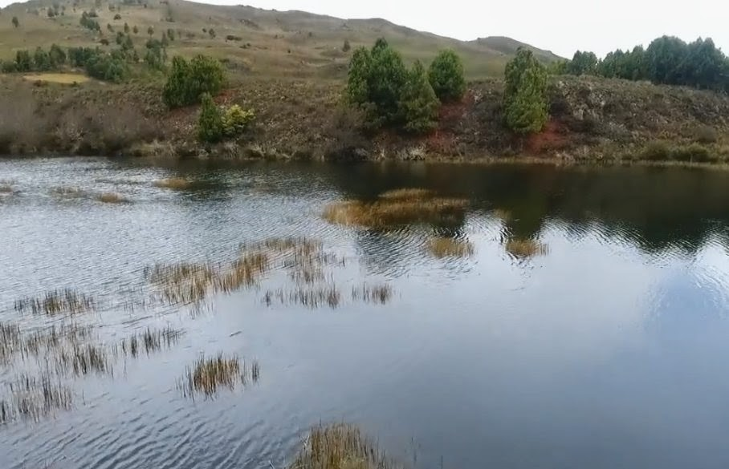

La Laguna de los Patos, incrustada en el corazón del majestuoso Páramo de Guane en el municipio de Aquitania, representa una de las joyas hidrológicas y ecológicas más prístinas y sagradas de la alta montaña boyacense. Clasificada bajo el rigor del Nivel Muisca (Dificultad: Alta), esta ruta está diseñada exclusivamente para excursionistas experimentados, amantes de la naturaleza virgen y aventureros de gran resistencia física que buscan desafiar sus límites y experimentar la sensación única de tocar el cielo con las manos. El sendero introduce al caminante en un entorno místico y primitivo, dominado por frailejones milenarios y turberas que actúan como fábricas naturales de agua pura. La recompensa final de la travesía es la aparición de un espejo de agua cristalina y profunda que permanece resguardado por las cumbres andinas, ofreciendo una experiencia de desconexión absoluta, silencio espiritual y un paisaje de alta fidelidad que justifica con creces cada metro de exigente ascenso.
Geográficamente, la expedición hacia la Laguna de los Patos se desarrolla en un gradiente altitudinal crítico que inicia cerca de los 3.030 m.s.n.m. en el valle y asciende verticalmente hasta superar los 3.600 m.s.n.m. en la zona de páramo propiamente dicha, lo que supone un desnivel positivo acumulado de más de 550 metros sobre un terreno de transición morfológica. La distancia total del circuito oscila entre los 5 y 6 kilómetros de longitud (ida y vuelta), requiriendo un tiempo estimado de marcha técnica de entre 3 y 5 horas según las condiciones físicas de los excursionistas y el estado del suelo. A diferencia de los miradores urbanos del municipio, la dinámica atmosférica del Páramo de Guane es sumamente variable y caprichosa; el clima de alta montaña hace que la neblina juegue constantemente a las escondidas, alternando momentos de bruma densa que cubre el paisaje con aperturas repentinas de cielo despejado que permiten una visibilidad panorámica impresionante de la laguna y los cañones circundantes, exigiendo que el visitante cuente con un sentido de orientación óptimo o el acompañamiento de un guía certificado.
El sendero hacia la Laguna de los Patos carece de intervenciones civiles modernas o pavimentación, conservando una morfología estrictamente natural y destapada que combina caminos de herradura, suelo de turba húmeda, tramos de roca suelta y pendientes pronunciadas que demandan una técnica de marcha precisa. Debido a la altitud extrema y la drástica disminución de la presión de oxígeno, el desafío cardiovascular y pulmonar es severo, por lo que es mandatorio ascender a un ritmo cardíaco controlado, realizar paradas de aclimatación y contar con un equipo técnico especializado que incluya calzado de alta montaña con membrana impermeable y agarre profundo, bastones de apoyo para la estabilidad del torso, ropa térmica vestida en capas (sistema de cebolla) y una chaqueta impermeable de alto rendimiento para soportar las temperaturas que pueden descender cerca de los 5 °C, además de portar un sistema de hidratación mínimo de 2 litros por persona.
Desde el punto de vista del patrimonio intangible y la ecología del paisaje, este sector del Páramo de Guane constituye un territorio sagrado que resguarda la memoria viva de la civilización Muisca, comunidad precolombina que consideraba a estas lagunas de alta montaña como portales cosmológicos y moradas de sus deidades acuáticas, donde se realizaban pagamentos y rituales de purificación. El entorno paisajístico actual es un museo biológico habitado por comunidades vegetales endémicas como los frailejones (Espeletia), musgos de turbera que retienen hasta cuarenta veces su peso en agua, y diversas especies de avifauna altoandina como el pato de torrente y el águila de páramo, lo que exige al turista una conducta de máximo respeto fundamentada en la política de contaminación auditiva cero, la prohibición absoluta de recolectar flora o alterar la fauna, y el compromiso ineludible de retornar al casco urbano la totalidad de los residuos sólidos generados.
CREADO POR YULEY PESCA 🥾